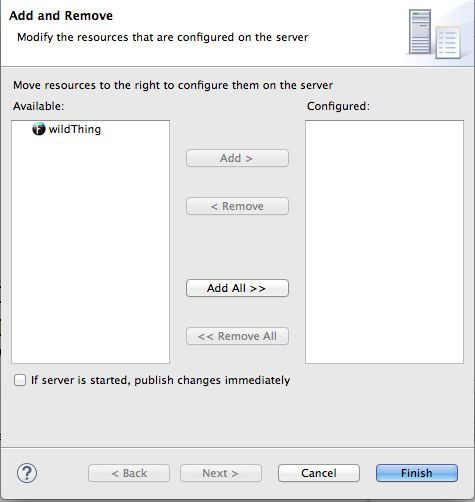
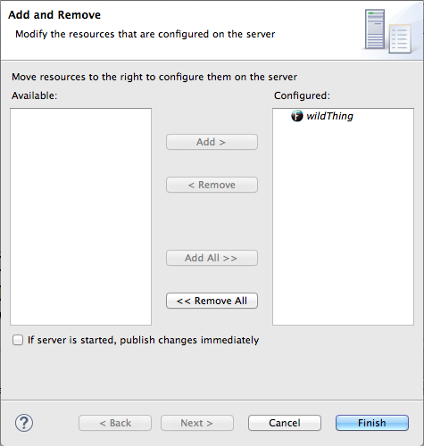
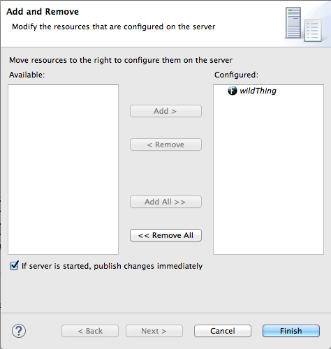
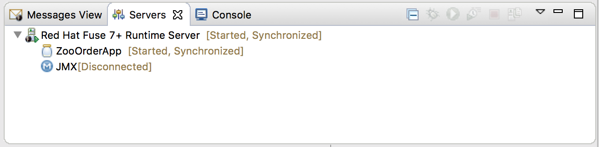
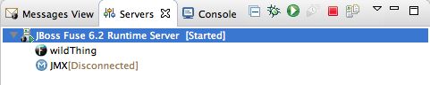
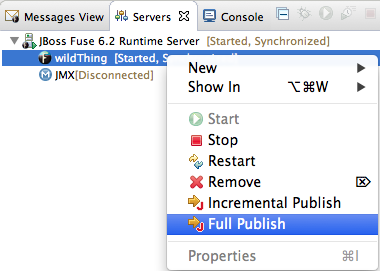
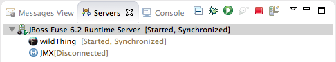
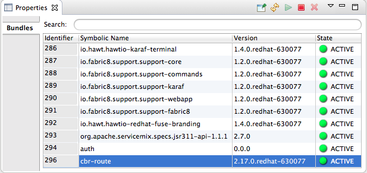

You deploy Fuse Integration projects into a server runtime using the Eclipse publishing mechanism. To do so, you must have defined and added the server to the Servers panel in Fuse Integration perspective. For a step-by-step demonstration, see https://access.redhat.com/documentation/en-US/Red_Hat_JBoss_Fuse/6.3/html/Tooling_Tutorials/RiderTutDeployFESB.html.
You can set up supported servers to publish assigned Fuse projects automatically or to publish them only when you manually invoke the publish command.
Each server runtime added to the Servers panel has its own Overview page that contains its configuration, connection, and publishing details:
You may need to expand Publishing to expose the server runtime publishing options and default settings:
Never publish automatically—You must select this option to manually publish projects.
![[Important]](imagesdb/important.png)
Important You must also disable the If server started, publish changes immediately option on the server's Add and Remove page (for details see, Publishing Fuse projects manually.
Automatically publish when resources change—[default] Enable this option to automatically publish or republish a Fuse project when you save changes made to it. How quickly projects are published depends on the Publishing interval (default is 15 seconds).
Automatically publish after a build event—For Fuse projects, works the same as Automatically publish when resources change.
The default publishing option for server runtimes is Automatically publish when resources change.
If necessary, start up the server runtime to which you want to publish a Fuse project. For details, see Starting a Server.
In the Servers panel, double-click the server runtime to open its Overview page.
Expand Publishing, and then select Automatically publish when resources change.
To increase or decrease the interval between publishing cycles, click the radio button next to Publishing interval (in seconds) up or down, as appropriate.
In the Servers panel, right-click the server runtime to open the context menu, and then select .
All resources available for publishing appear in the Available column.
To assign a resource (in this case, the
CBRrouteFuse project) to the server runtime:double-click it, or
select it, and click .
The selected resource moves to the Configured column:
At this stage, the time at which the assigned resource would actually be published depends on whether the server runtime was running and on the Publishing interval setting. However, if the server was stopped, you would have to manually publish the project after you started the server (for details, see Publishing Fuse projects manually).
Click the If server started, publish changes immediately option to enable it:
This option ensures that the configured project is published immediately once you click . The Automatically publish when resources change option on the server runtime Overview page ensures that the configured project is republished whenever changes made to the local project are saved.
Click .
The project appears in the Servers panel under the server runtime node, and the server runtime status reports
[Started,Publishing...].When publishing is done, the status of both the server runtime and the project report
[Started,Synchronized]:![[Note]](imagesdb/note.png)
Note For a server runtime,
Synchronizedmeans that all published resources on the server are identical to their local counterparts. For a published resource,Synchronizedmeans that it is identical to its local counterpart.
If necessary, start up the server runtime to which you want to publish a Fuse project. For details, see Starting a Server.
In the Servers panel, double-click the server runtime to open its Overview page.
Expand Publishing, and then select Never publish automatically.
Click > to save the publishing option changes.
If the Fuse project has already been assigned to the server runtime, make sure the If server started, publish changes immediately option is disabled.
In the Servers panel, right-click the server runtime to open the context menu.
Click to open the server's Add and Remove page.
If the If server started, publish changes immediately option is enabled, disable it.
Skip to Step 7.
If the Fuse project has not been assigned to the server runtime, assign it now.
Follow Step 5 through Step 6 in Publishing Fuse projects automatically when resources change.
Do not enable the If server started, publish changes immediately option.
Click .
The project appears in the Servers panel under the server runtime node, and the server runtime status reports
[Started]:In the Servers panel, right-click the project's node (in this case, the Fuse project
CBRroute) to open the context menu:Select .
During the publishing operation, the status of both the server runtime and the project report
[Started,Republish]:When publishing is done, the status of both the server runtime and the project report
[Started,Synchronized]:Note The tooling does not support the option. Clicking results in a full publish.
After you have published a Fuse project to a server runtime, you can connect to the server and check that the project's bundle was installed on it.
Connect to the server runtime. For details see Connecting to a running server in Servers panel.
In the Servers panel, expand the server runtime tree to expose the Bundles node and select it.
The tooling populates Properties view with a list of bundles that are installed on the server:
To find your project's bundle, either scroll down to the bottom of the list, or start typing the bundle's in Properties view's Search box. The bundle's is the name you gave your project when you created it.
Note Alternatively, you can issue the osgi:list command in view to see a generated list of bundles installed on the JBoss Fuse server runtime. The tooling uses a different naming scheme for OSGi bundles displayed by the osgi:list command.
In the <build> section of project's
pom.xmlfile, you can find the bundle's symbolic name and its bundle name (OSGi) listed in themaven-bundle-pluginentry; for example: